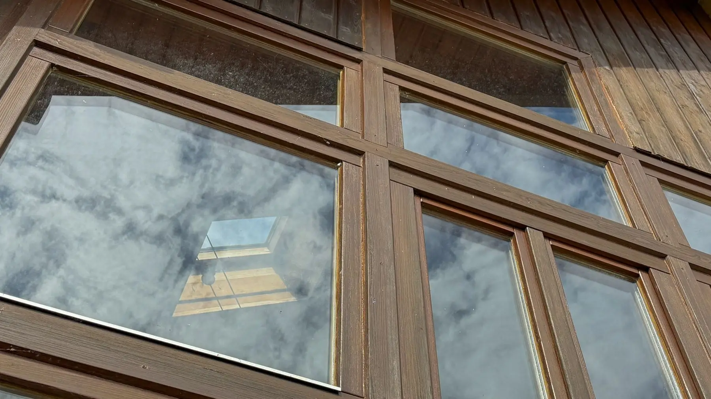

Der Blick nach oben zeigt nur trübes, vermoostes Glas und keine freie Sicht in den Himmel? Verwandeln Sie Ihr Glasdach wieder in ein echtes Highlight!
Wir übernehmen das für Sie: Sicher vom Boden aus reinigen wir Ihr Glasdach oder Ihren Wintergarten mit Teleskoptechnik und Reinwasser – schonend, porenrein und garantiert streifenfrei. Ihr Rundum-sorglos-Service: Sie müssen dafür weder vor Ort sein noch etwas vorbereiten. Sie kommen nach Hause und fangen jeden Sonnenstrahl wieder voll ein.
Reinwasser für streifenfreies Ergebnis
Die Pflege von Glasflächen, Lichtdächern und Stegplattenkonstruktionen erfolgt materialschonend und hocheffektiv mit entmineralisiertem Reinwasser. Durch den Verzicht auf herkömmliche Chemie und kalkhaltiges Leitungswasser trocknen alle Glas- und Rahmenflächen absolut streifen- und rückstandsfrei ab.
Bei Holzwintergärten, vor allem bei schon etwas älteren Konstruktionen, verzichten wir bewusst auf die Reinwassermethode. Das Wasser würde sonst in feine Risse und offene Poren des Holzes eindringen und dort langfristig Schaden anrichten. Genau wie bei der klassischen Fensterreinigung setzen wir hier stattdessen auf die herkömmliche Methode aus Einwäscher und Abzieher. Auch die Innenseite des Wintergartens wird auf diese Weise streifenfrei gereinigt, Rahmen und Profile können auf Wunsch zusätzlich mitgereinigt werden.
Statik-, Rahmen- und Dichtungsschutz
- Einsatz von Carbon-Teleskoplanzen: Dank moderner, wasserführender Teleskoplanzen bearbeiten wir selbst schwer zugängliche Bereiche, hoch gelegene, nicht ebenerdige Wintergärten und ausladende Überdachungen sicher und präzise direkt vom Boden aus – aufwendige Gerüste oder Hubsteiger sind meist überflüssig.
- Schonung der Statik: Die empfindlichen Dachflächen von Wintergärten oder Terrassenüberdachungen werden von uns nicht betreten – jegliches Risiko von Glasbruch, Rissen oder Verformungen der Profile wird konsequent ausgeschlossen.
- Komplettpflege inklusive Rahmen & Dichtungen: Rahmenprofile, Eckverbindungen und integrierte Entwässerungsrinnen werden gründlich gereinigt. Moos- und Algenansätze an den Gummidichtungen werden sanft entfernt, damit deren Elastizität erhalten bleibt und die Konstruktion dauerhaft dicht bleibt.
- Lamellen- & Jalousienreinigung: Für Lamellen- und Jalousienkonstruktionen am Wintergarten setzen wir speziell dafür entwickelte Geräte ein, die exakt zwischen jede einzelne Lamelle passen und diese mit Reinwasser rückstandsfrei säubern.
Warum gereinigte Flächen länger sauber bleiben
Unser entmineralisiertes Reinwasser hinterlässt einen spürbaren antistatischen Effekt auf der behandelten Fläche. Dadurch wird die Oberfläche deutlich staubabweisender, neuer Schmutz haftet schlechter und setzt sich langsamer fest. Das Ergebnis bleibt dadurch über einen längeren Zeitraum sichtbar sauber, bevor eine erneute Reinigung notwendig wird.
Warum regelmäßige Pflege so wichtig ist!
Das passiert, wenn Sie zu lange warten.
Grünbelag, Flechten & Co.: Reinwasser und rotierende Bürsten
Sitzen auf dem Glas der Terrassenüberdachung oder des Wintergartens bereits starke Ablagerungen wie hartnäckiger Grünbelag, Flechten oder sonstiger Schmutz, reicht reines Wasser allein manchmal nicht aus. Zuerst setzen wir auf die starke Reinigungsleistung unseres Reinwassers, das den Großteil der Verschmutzung bereits löst. Bleiben hartnäckige Rückstände zurück, kommen zusätzlich schonende, rotierende Bürsten zum Einsatz, die ebenfalls eine starke Reinigungsleistung besitzen und die Verschmutzung zuverlässig abtragen, ohne die Glasoberfläche zu beschädigen.
Warum sich Verschmutzungen sonst ins Glas einbrennen
Wintergärten und Terrassenüberdachungen sollten regelmäßig gepflegt werden, vor allem die Dachflächen. Bleiben starke Verschmutzungen zu lange liegen, können sie sich bei hohen Temperaturen regelrecht in die Glasoberfläche einbrennen. Ist dieser Punkt erst erreicht, lässt sich die Verschmutzung oft nicht mehr vollständig entfernen, selbst mit professioneller Technik nicht mehr zu hundert Prozent. Regelmäßige Reinigung verhindert genau das und erhält den klaren, streifenfreien Durchblick dauerhaft.
💡 Steuertipp
Als Privatkunde können Sie bis zu 20 % der Lohnkosten dieser Handwerkerleistung direkt von Ihrer Einkommensteuer absetzen (§ 35a EStG) – bis zu 1.200 € Ersparnis pro Jahr. Voraussetzung: Zahlung per Überweisung, keine Barzahlung.
Das haben Sie davon.
Ihre Sicherheit geht vor – Sie müssen nicht selbst auf die Leiter
Ob hoher Wintergarten oder ausladende Terrassenüberdachung: Wir arbeiten mit professioneller Teleskoptechnik direkt vom Boden aus. Sie riskieren keinen Sturz von der Leiter oder vom Dach, nur damit Ihre Flächen sauber werden.
Mehr Licht, klarer Durchblick, ein rundum helleres Zuhause
Saubere, streifenfreie Glasflächen machen sofort einen spürbaren Unterschied. Volles Tageslicht kommt wieder ungehindert herein, der Blick nach draußen ist frei, und Ihr Wintergarten wirkt heller und einladender.
Bereit für freie Sicht nach oben und maximale Entspannung?
Fordern Sie jetzt eine unverbindliche Ersteinschätzung an – wir melden uns noch am selben Tag mit einem passenden Angebot für Ihren Wintergarten oder Ihre Überdachung.